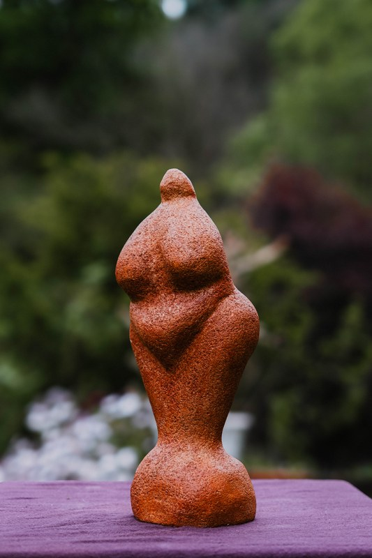
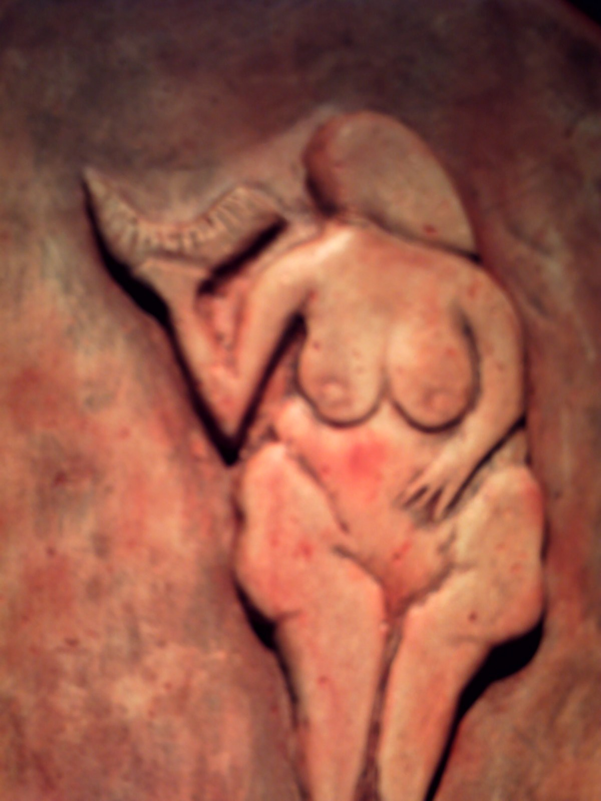

I
Vertiente uno · · · 30.000 – 22.000 AP
Venus gravetienses


Figurillas femeninas talladas hace entre 30.000 y 22.000 años, durante el Gravetiense del Paleolítico superior. Senos voluminosos, vientre prominente, ausencia de rasgos faciales. Una estatuaria simbólica que cruza Europa de Austria a la Aquitania.
- Willendorf Austria · caliza 11 cm
- Laussel Francia · cuerno alzado
- Lespugue Francia · marfil 14,7 cm
- Brassempouy «dama del capuchón»
- Dolní Věstonice Chequia · cerámica
Domingo talla sus propias versiones en bulto redondo: arenisca, terracota, relieve, grabado.